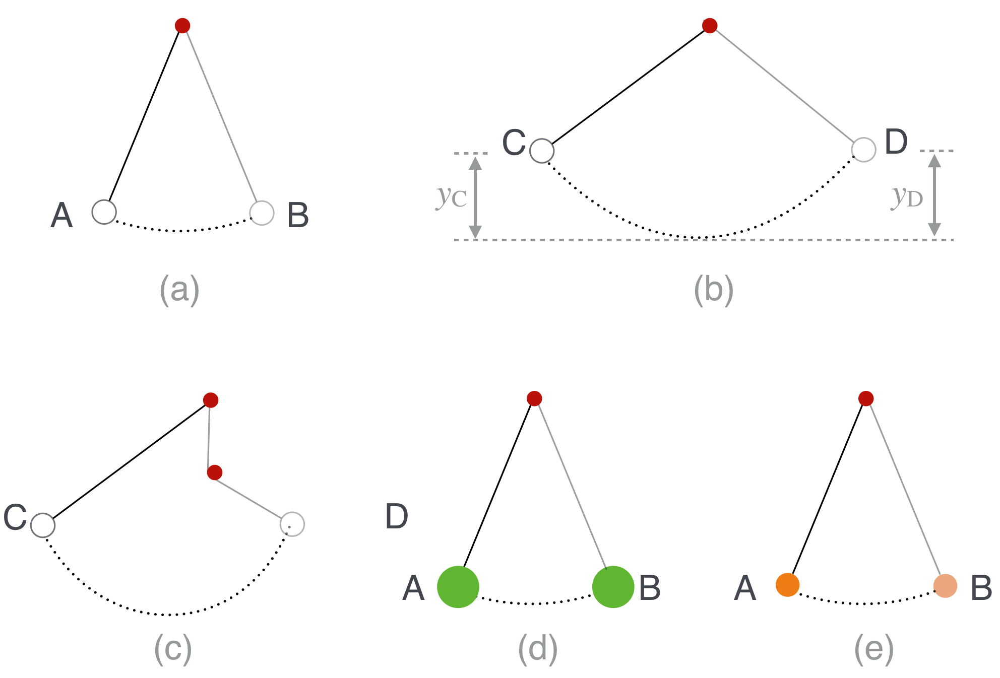
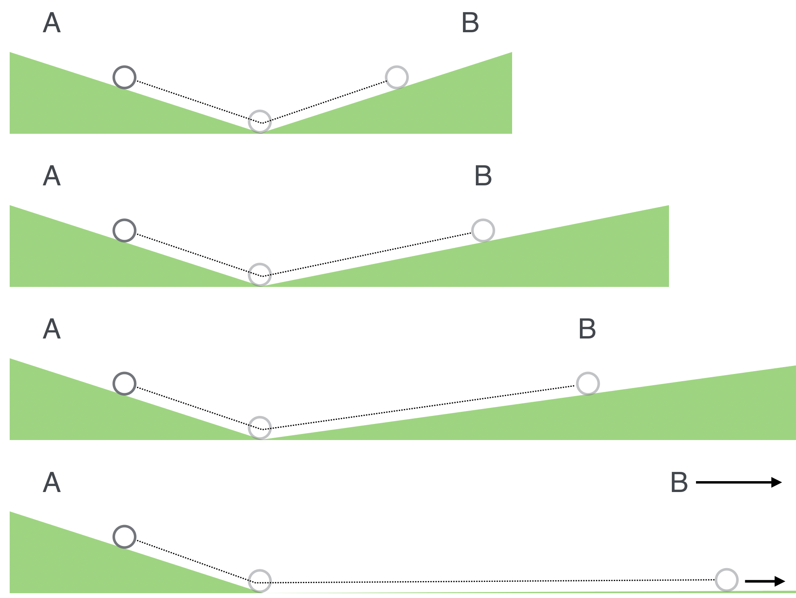
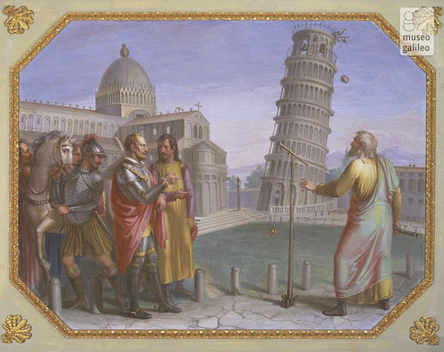

5.11. The Pendulum#
A pendulum is a trivial toy, yet it uses many key ideas about motion and force. Galileo, Christiaan Huygens (whom we’ll meet in a bit), and Isaac Newton each made many pendulums and did extensive experiments with them. Because of its immediate simplicity, quantitative measurements are easily done with modest tools. This figure is a picture of a simple pendulum which I’ll refer to periodically over the next few chapters.

Fig. 5.26 Each picture is referred to in the text. Think of the red dot as a peg, either from where the pendulum cord is attached—all of the figures—or in (c) where a peg suddenly gets in the way.#
Buzzword: a “period.”
The period is the time that it takes for some repetitive motion to repeat.
These are all observations that Galileo made about pendulums in 1602.
In (a) the little pendulum bob makes a to-and-fro motion from A to B and then back to A and the same thing happens in figure (b). Galileo found that the time to complete a full period (from A-B-A, and from C-D-C) was the same for (a) as it was for (b).[1] This is called the isochronous (equal time) behavior of pendulums.[2] It doesn’t matter how far up you start the pendulum, the time it takes is the same for all. In fact, he found that the period of a pendulum depends only on the length of the cord.
The next thing that he found was close, but not quite the case, but here he was again, very clever. Look at (b) which has some additional markings. In the drawing the height that the bob starts from at C, \(y_C\), is the same as the height that the pendulum goes to at D, namely \(y_C=y_D\). Furthermore, this common height is regained, back and forth as the pendulum repeats its motion. Except it doesn’t!
Real pendulums don’t do this – they slow down. Galileo acknowledged this observation. But instead of believing that every pendulum swing for different bobs to be unique, he claimed that there was an unchanging – and unobservable – rule of motion (a “law”) that’s masked by friction and air resistance.
This is an example of the most important idea that Galileo left for us, even more important than some of his discovered facts about Nature:
the real-rules of nature are hidden Galileo decided that the regularities of Nature were ideal and hidden from actual behavior. We can get close, but not exactly there. An ideal pendulum would repeat forever, always coming back to those original heights and it’s friction in the pin and air resistance that modify that perfect behavior. The goal of natural philosophy (our “science”) is not to describe what we observe in real life, but rather to uncover those hidden regularities and then explain the corrupted behavior that we observe as due to small influences like friction. Without this new motivation, physics is impossible.
Galileo studied this return-to-the-source phenomenon by sticking a peg in the way of the string causing the bob to quickly rise…back to that same level, as shown in figure (c).
Finally, here’s one more important discovery. Figures (d) and (e) are meant to represent the comparison of two pendulums for which the bobs are different masses and/or different materials. Through experiment he found that they behave identically. Nature doesn’t care if the big pendulum bob is iron and the other is wood: the bobs have the same periods and behave the same regardless of their nature.
Galileo found that the period depends only on the length of the cord. Newton went further and measured \(g\) using pendulums, deriving the period mathematically from his mechanics.
We’ve just crossed an important historical milestone. Physics is now possible because of this crucial discovery by Galileo: there are fundamental rules that nature follows, common for all processes, but hidden from our observations by disruptive effects like friction and air resistance.
The physicist’s job is to find these hidden, universal rules by conceptual and mathematical modeling.
Everything that follows in this book is built on this commitment!
5.11.1. Back to falling bodies#
It’s this extrapolation from pendulum motion to falling bodies that led Galileo to decide that a falling body accelerates the same regardless of its size, material, or weight.
There are two really important ideas here. First, as I emphasized he’s assuming that the true rules of motion are ideal and hidden from us in real life. Second, he explains the observational fact that a heavier object when dropped will fall to the ground faster than a light object. Your eyes deceive you! He surmised that the lighter object is much more affected by air resistance than a heavier one. Even if two objects were made of the same material, but were different shapes—they should land at the same time, but in real life the air would slow down the larger of the two. This is pendulum-thinking! Galileo saw a connection between one phenomenon (pendulum periodic motion) and a seemingly different phenomenon (free fall) and used one to gain insight into the other. To Aristotle, one would be unnatural motion and the other natural, so this is a big leap.
You can test this yourself. Take two identical pieces of paper, crumple one up into a ball and drop them both. What happens?
Never in his life did he—nor have you or I—seen two different objects fall in the presence of gravity in exactly the way that Galileo insisted was the underlying rule. Humankind had to go to the Moon in order to test this in the complete absence of any air:
In 1971 towards the end of his last moon-walk, Commander David Scott dropped a hammer and a feather in order to demonstrate (test?) Galileo’s assertion about free-fall. Scott was an engineering student at the University of Michigan for one year (and was on the swim team) when he transferred to West Point. He graduated with such high grades that he was able to pick which service to join and chose the Air Force where he became a test pilot. Apollo 15 was the fourth moon landing and Scott’s third space mission.
But wait, there’s more. In an ingenuous blending of pendulum and inclined plane motion, Galileo discovered Newton’s First Law of Motion, 60 years before Newton did. This figure tells that story:

Fig. 5.27 Galileo’s reasoning about how an object would move forever—an early version of the law of inertia.#
In the top figure, a ball rolling down an inclined plane gets to the bottom and rolls up the adjacent plane to B which is at the same height as A. See how that’s very close in spirit to a pendulum? In the next figure the second plane is shallower, but the ball still makes it back to its new B…which is at the same height. The next figure, the same thing happens. Galileo then says what if the adjacent incline is not an incline at all, but just a flat surface—his conclusion was that the ball would continue in a straight line forever. [^forever]
Again this conclusion is totally contra-Aristotle! There’s no pushing involved in this final motion. Once it’s started, it goes.
Notice how far behind Aristotle looks in Galileo’s rear view mirror!
He’s not worried about natural or unnatural motion and he’s not concerned himself with why the motion continues. Rather he’s asking different questions…How questions rather than Why questions. Aristotle’s students would start with a philosophical prejudice and interpret what they saw in accordance with that philosophical system. Why did something in Nature happen? Aristotle’s writings would provide the answer, regardless of the contortions required to make it fit. The authority of Aristotle functioned much like legal precedent functions in a courtroom: you explain according to textual authority. Nope. Not our Galileo, not in our science.
Galileo threw all of that aside and observed nature with fewer (albeit, different) preconceived notions than people before him. So if you release a ball in any of our three examples—free fall, pendulum, and inclined planes—where would it go? is his question. Not, why would it go. He’d set up the circumstance and he’d observe it—no Aristotelian would do an experiment. They would think about it in the specific context of the philosophy and passively observe.
Now he’s doing physics and Aristotle has left the building.
5.11.2. Air Resistance#
Little \(g\) is a large acceleration, but raindrops don’t usually bruise us and hail stones don’t usually kill. in the absence of air resistance, nice spring showers would be dangerous as rain drops fall a long way! It turns out that things dropped from high up reach a speed in which the viscous drag of air friction pushes back with the same force that the Earth pulls, causing a falling object to reach equilibrium. The result is that the speed of falling becomes constant to what’s now called the Terminal Velocity, which depends on an object’s size.
For example, a regulation major league baseball will reach terminal velocity in about two and a half seconds after falling about 100 ft. At that point, its speed will be just a little more than 60 mph and will stay at that value. For reference, the “Green Monster” left field wall in Fenway Park is about 40 feet (11 m) high, so you can see that high fly balls would be high enough to reach terminal velocity on their way down.
There have been stunts performed with baseballs dropped from the Washington Monument, skyscrapers, and balloons for players to catch. The speed that a baseball would achieve is not much more than that experienced by a catcher on a high school baseball team. However, famously a professional catcher knocked himself out missing a ball dropped from a blimp.
While Galileo was on the faculty at Padua, he did other experiments with motion which lay dormant until 1638 when he wrote the second of his great books, Discourses and Mathematical Demonstrations Relating to Two New Sciences. He finished this work while under house arrest outside of Florence as an old, sick man. How he got into trouble is a story that we’ll leave for our discussion of early astronomy.
5.11.3. That Tower#
{kind=link}

Fig. 5.28 Luigi Catani, 1816 (Palazzo Pitti, Firenze, Quartiere Borbonico o Nuovo Palatino, sala 15)”#
You know the one. That story. Galileo did write about dropping two cannon balls from the Leaning Tower of Pisa and he described what one would see: the lighter of the two would lag the heavier. Not simultaneous. He’d seen things fall and realized that the density of the ball compared with the density of air would favor the more dense object. But he was committed to the program and explained the lack of simultaneity was due to the environment. The rule of free fall was still valid as an abstraction. Here’s what Galileo said:
“Aristotle says that ‘an iron ball of one hundred pounds falling from a height of one hundred cubits reaches the ground before a one-pound ball has fallen a single cubit.’ I say that they arrive at the same time. You find, on making the experiment, that the larger outstrips the smaller by two finger-breadths, that is, when the larger has reached the ground, the other is short of it by two finger-breadths.”
One hundred cubits is about 200 feet. The Leaning Tower is 58 meters high, or about 190 feet, so roughly 100 cubits.
Galileo was right to scorn the enormous difference in distance fallen predicted by Aristotle but his own prediction is way off!
That “two finger breadths” would be only a couple of inches at most. However, if one uses a model of air and iron and calculates the effect of the retardation of each by the medium, you find that the lighter would lag the heavier by about 4 feet! So he didn’t perform the experiment since he could easily have observed that separation. Many have since, confirming the calculations.
Also one would have thought that such a demonstration would have been a big deal “on campus” and Pisa would have been all abuzz. Certainly there are lots of painted depictions of the event. But there is no correspondence, no public announcement or public report…silence. This is another of the myths created by Galileo’s imaginative student, Viviani. The experiment at the tower and elsewhere was performed by others, including: Vicenzio Renieri, Giorgio Coresio, Simon Stevin, Giuseppe Moletti, Varchi, and John Philoponus. Renieri was a professor and priest and reported the results (apparently badly) to Galileo. Maybe that’s where he got the idea.
In the absence of air resistance, a cannonball – or an apple – would fall the 58 meters to a speed of about 33 m/s, about 70 mph. And now you know how to calculate that.